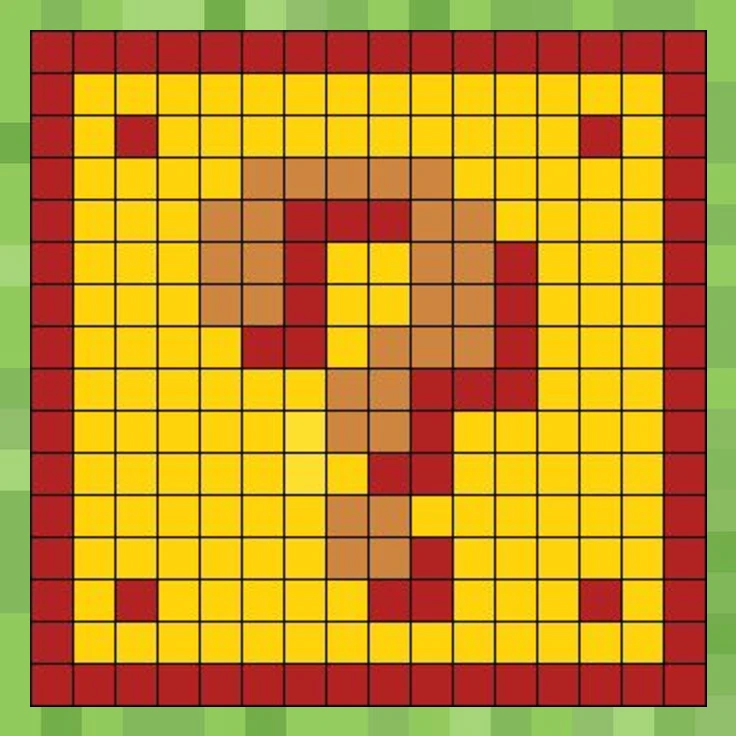
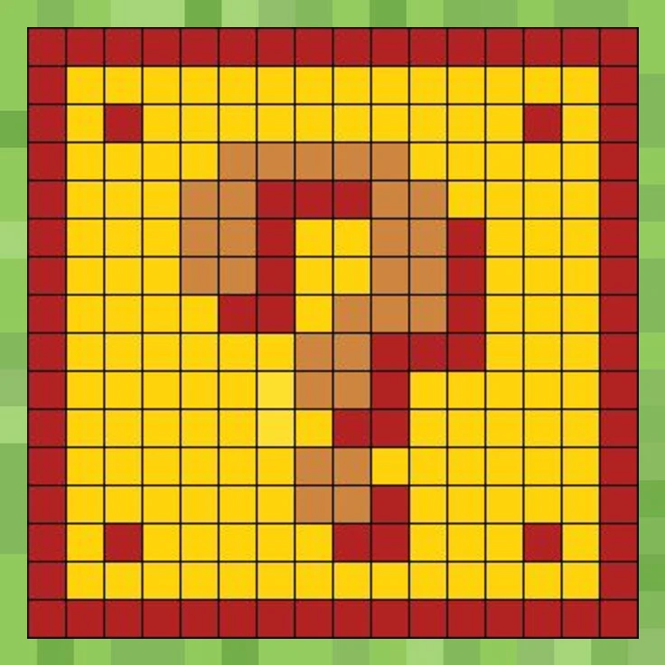
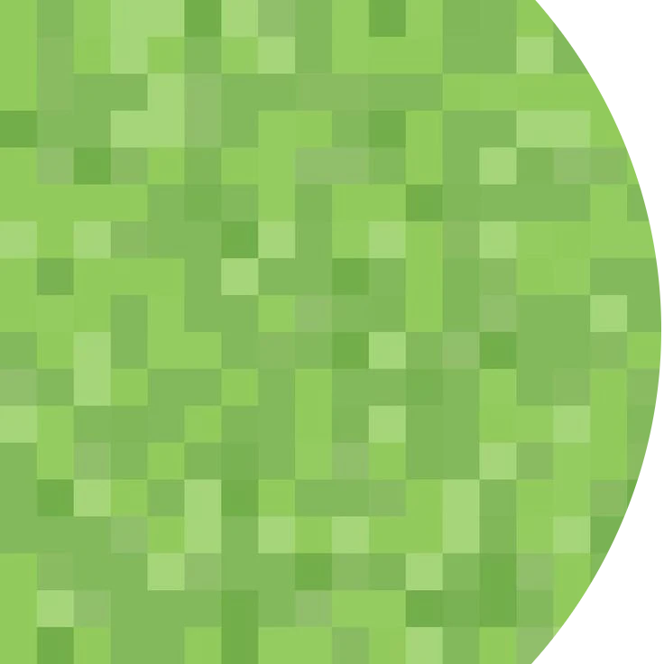
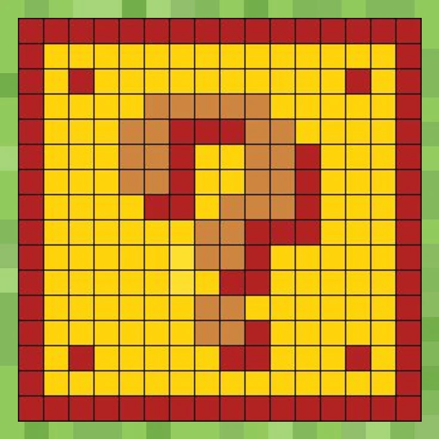
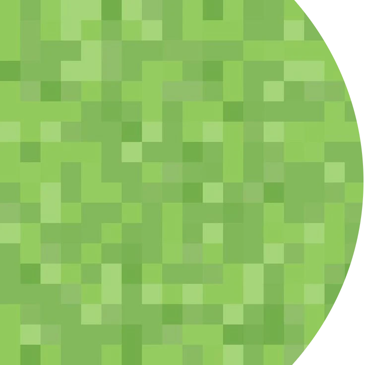
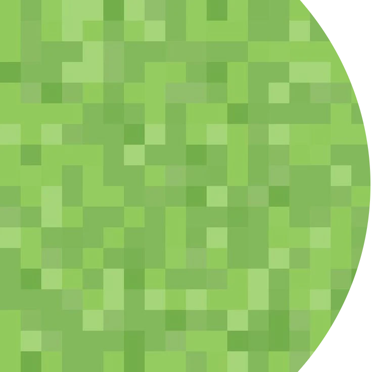
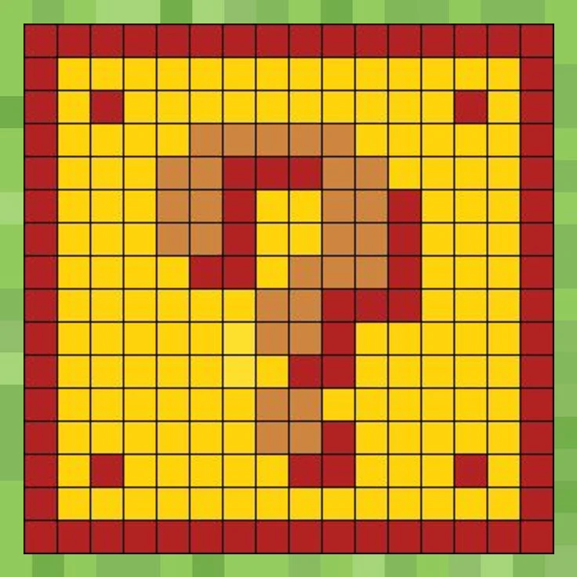
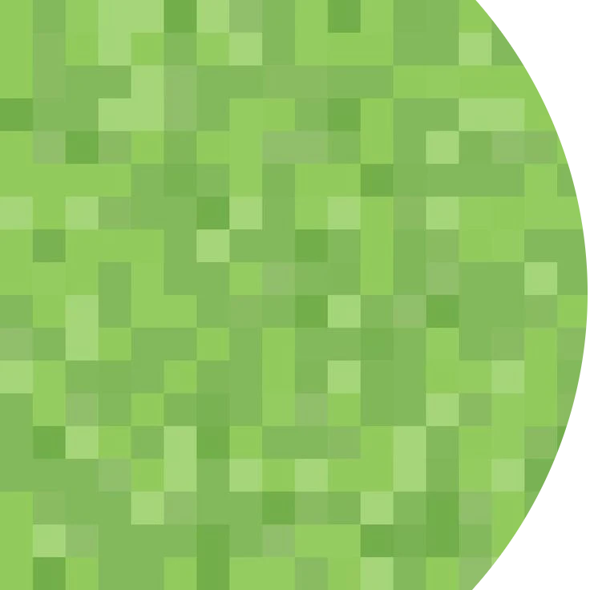

Left Click one of the squares to begin the game. Pay attention to the numbers and deduce where the mines are located.
Choose your difficulty if you wish to test yourself.
Press the pig face to reset the board.
Press the book to see data.
Press the chronometer to show how much time it takes for you.
 



 




